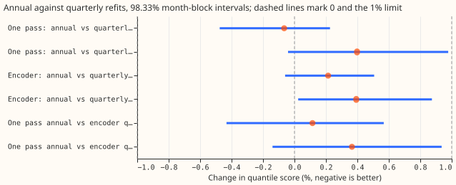
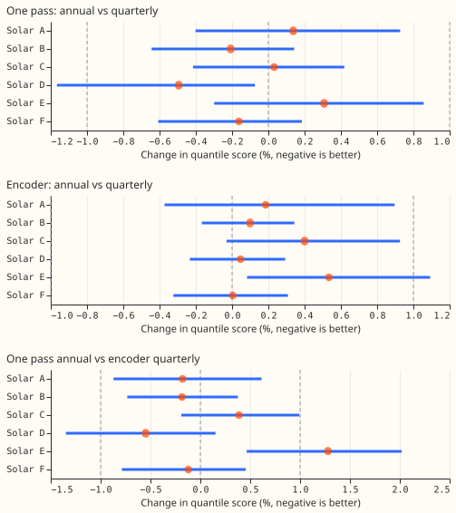
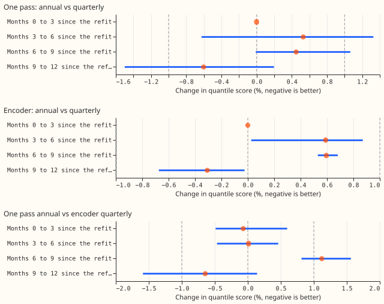
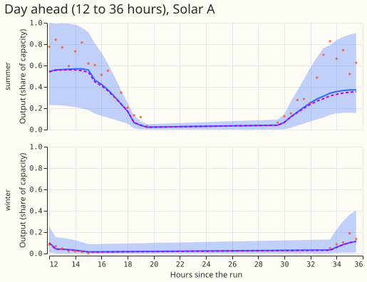
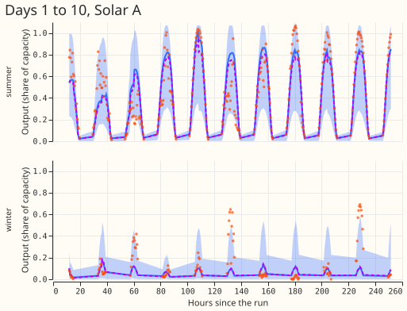

Can the pooled solar network for the six metered farms be refitted once a year instead of every quarter without losing more than 1% of its quantile score?
Refitting the solar neural network once a year scores within 1% of refitting it every quarter, for both neural networks we tested, so the first production solar forecast needs one refit a year instead of four. The score is the quantile score, a pinball loss averaged over 11 quantile levels (lower is better). One further comparison fails. At Solar E, the neural network that reads only the mean and spread of the ensemble weather forecast ("one pass") with annual refits scores 1.3% worse than the neural network that reads all 51 ensemble members ("the encoder") with quarterly refits. Most of that gap comes from the network design and not from the refit schedule, because the one-pass network with quarterly refits is already 1.0% worse than the encoder at Solar E.
We asked whether the pooled neural network for the six metered solar farms (Solar A to F, metered by National Grid Electricity Distribution) can be refitted once, on data to 31 August 2025, and then forecast all 12 scored months, instead of being refitted every quarter. A 51-member ensemble weather forecast drives each network. Experiment 430 built both networks and refitted them quarterly; we refitted each of them once, with six random initialisations (seeds), and compared the forecasts with experiment 430's stored quarterly forecasts. Experiment 430 also found that the one-pass network scores 6.842 against 6.810 for the encoder over all bands (three seeds; 0.18% at six seeds), so we quote that result and did not rerun it.
Both annual-refit schedules passed the pre-registered 1% limit. Scores are quantile scores in percentage points of installed capacity, farm-equal means over experiment 310's scored year. We resample whole months 10,000 times, and each interval covers 98.33% so that the three contrasts together have a 5% error rate. The minimum detectable effect from the seed spread is 0.58% for the annual one-pass network, 0.28% for the quarterly one-pass network, 0.38% for the annual encoder, and 0.58% for the quarterly encoder, so the 1% limit lies above all four. The margin is small for the encoder: a later check (Audit, below) estimates that adding seed noise to the interval lifts the upper end to about 0.88% for C2 and 0.95% for C3.
| Contrast | All bands | 12 to 36 hour band | Worst farm (all bands) | Verdict |
|---|---|---|---|---|
| C1: one pass, annual against quarterly | −0.07% (−0.48% to +0.23%) | +0.40% (−0.04% to +0.98%) | Solar E +0.31% (−0.30% to +0.86%) | equivalent |
| C2: encoder, annual against quarterly | +0.21% (−0.06% to +0.51%) | +0.39% (+0.02% to +0.87%) | Solar E +0.53% (+0.08% to +1.09%) | equivalent |
| C3: one pass annual against encoder quarterly (baseline) | +0.11% (−0.43% to +0.57%) | +0.37% (−0.14% to +0.94%) | Solar E +1.28% (+0.46% to +2.02%) | not equivalent: Solar E exceeds +1% |

Figure 1. Percentage change in quantile score of the annual-refit network against its reference, with 98.33% month-block intervals, over all bands and in the 12 to 36 hour band. Negative is better. The dashed lines mark 0 and the 1% limit.

Figure 2. The same contrasts for each farm, all bands.

Figure 3. The same contrasts by months since the 2025-09 refit, grouping runs by their init month. The first group is zero by construction, because the annual and quarterly fits are the same fits. Each interval resamples the 3 to 4 valid-time months that the group's forecasts fall in, so it is descriptive.
Results
- Absolute scores (all bands, six seeds). Annual one pass 6.825, quarterly one pass 6.830, annual encoder 6.832, quarterly encoder (the baseline) 6.818.
- The loss does not grow with the age of the network. The annual schedule scores +0.53% and +0.45% against the quarterly schedule in months 3 to 6 and 6 to 9 for the one-pass network, +0.59% and +0.60% for the encoder, and −0.60% and −0.31% in months 9 to 12 (annual better).
- The predicted growth through the year did not appear. One refit date and one year cannot separate the season from the age of the network.
- C3 exceeds 1% in months 6 to 9 (+1.12%), which mixes the schedule and the network design. The per-quarter intervals are too narrow (Audit), so we do not read them.
- The 12 to 36 hour band loses a little more. The loss is +0.4% for both networks, inside the limit, with the C2 interval just above zero (+0.02% to +0.87%).
- Control passed. On the first three init months the annual and quarterly forecasts agree to below 1e-5% for both networks (largest row difference 1.2e-5 points), as the same fit and seed give.
- Prediction against result. C1 was predicted at +0.3% and came out −0.07%, inside the interval the prediction stated. C2 was predicted at +0.3% and came out +0.21%. C3 was predicted at +0.5% with the upper end below +1.5%, and came out +0.11% with an upper end of +0.57%. The prediction that the last quarter alone may exceed 1% did not hold.
Tails
| Arm | 0.01 pinball | 0.99 pinball | Coverage of 0.01 | Coverage of 0.99 | Median minus mean (points) |
|---|---|---|---|---|---|
| annual one pass | 0.345 | 0.333 | 0.0534 | 0.9861 | −0.035 |
| quarterly one pass | 0.344 | 0.335 | 0.0530 | 0.9850 | −0.072 |
| annual encoder | 0.340 | 0.335 | 0.0527 | 0.9839 | +0.022 |
| quarterly encoder | 0.338 | 0.334 | 0.0525 | 0.9849 | −0.116 |
Farm-equal means over all bands, six seeds, points of capacity. The 0.01 quantile covers 5.3% of observations in every arm against the nominal 1%, as in experiment 430. Annual refits move no pinball loss by more than 0.0021 points.
Example forecasts

Figure 4. One-pass forecasts of Solar A for the 12 to 36 hours after a summer run and a winter run. The band is the 5% to 95% range of the annual network, the solid line its median, the dashed line the median of the quarterly network, and the dots the observed output.

Figure 5. The same two runs over days 1 to 10.
Serving table
| Stack | Networks per serving pass | Inputs | Refits per year | Score against baseline (all bands) |
|---|---|---|---|---|
| Encoder, quarterly (baseline) | 1 network with the 51-member encoder | member-level and summary columns | 4 | 0 |
| One pass, quarterly | 1 network | ensemble mean and spread | 4 | +0.18% (six seeds, this experiment's scoring) |
| Encoder, annual | 1 network with the 51-member encoder | member-level and summary columns | 1 | +0.21% (C2) |
| One pass, annual | 1 network | ensemble mean and spread | 1 | +0.11% (C3), Solar E +1.28% |
A refit takes about 8 seconds of GPU time for the one-pass network and 24 seconds for the encoder, per seed.
Checks
- Median minus mean forecast. Averaged over all rows, the median forecast minus the mean forecast is −0.035 points of capacity for the annual one pass, −0.072 for the quarterly one pass, +0.022 for the annual encoder, and −0.116 for the quarterly encoder (Tails table), so no arm's median differs from its mean by more than 0.12 points.
- Mean-forecast error beside the contrasts. The mean absolute error of the mean forecast favours the annual schedule in all three contrasts: −0.41% for C1 (−0.91% to −0.05%), −0.08% for C2 (−0.40% to +0.26%), and −0.22% for C3 (−0.88% to +0.41%). The quantile score favours it for C1 only. The gaps are 0.4 to 1.2 times the seed-resampling standard deviation of the contrast (0.18 to 0.35 percentage points), so we read them as noise.
- Triggers fired. Of the seven audit triggers in the
ml-experimentskill, trigger 3 fired for C1 and C2 (the mean-forecast error and the quantile score point in different directions, by an amount inside seed noise), and trigger 4 fired for C1 (omitting Solar D flips the sign, from −0.07% to +0.03%) and C3 (omitting Solar E flips the sign, from +0.11% to −0.15%). A fresh Sonnet agent audited the result (below). Triggers 1, 2, 5, and 6 did not fire, and trigger 7 does not apply.
Audit
A fresh Sonnet agent re-derived the contrasts with its own code and tried to break them.
- Re-derivation: the three all-band point estimates and the per-farm estimates match the printed values to three decimals, and the intervals agree to 0.01 percentage points. Accepted, no change.
- Control: for each of the six seeds and both networks, annual and quarterly forecasts agree to 3.3e-6 in every quantile on the first three init months. They first differ in the init month 2025-12, as expected. Accepted.
- Rows: all four arms hold 410,899 rows per seed, with identical keys and actuals. No leakage, misalignment, or dropped rows. Accepted.
- Leave-one-farm-out: the sign flips for C1 (omit Solar D) and C3 (omit Solar E), and both contrasts sit within ±0.3% of zero, so the flips are immaterial. The interval part of the verdict never changes (largest upper ends: +0.33%, +0.57%, +0.69%). C3 becomes equivalent without Solar E, so its verdict rests on that one farm. Accepted, stated in the opening.
- Seed noise in the interval: the month-block interval treats the six-seed averages as fixed. The audit adds seed noise in quadrature and estimates the upper ends at about 0.57% for C1, 0.88% for C2, and 0.95% for C3. Accepted: the equivalence of C2 and C3 has little margin below the 1% limit, and the page says so.
- Per-quarter intervals: a cut of 3 or 4 valid-time months allows only 10 to 35 distinct resamples, so the intervals are too narrow and uncorrected. Accepted: Figure 3 is descriptive.
- Staleness prediction: the last group is better for the annual schedule, so the predicted growth of the loss through the year did not appear. Accepted.
Caveats
- One scored year, one refit date. Both schedules share the training end of 2025-08-31, so the result is for one year of staleness starting in September. A refit date in another month could differ.
- The quarterly references come from experiment 430's run, on a different day. The control shows that the same configuration and seed give the same forecast on the first quarter, so the stored references are consistent with a refit of that configuration.
- Solar E under the encoder. The farm rule reads point estimates, and the Solar E interval for C2 reaches +1.09%, so one farm is not shown to stay within 1%.
- Solar E. The comparison of the one-pass network with the encoder at Solar E (C3) is dominated by the network design, as experiment 430's leave-one-farm-out check found.
- Own history only, no recalibration table. The networks train on each farm's own record and the forecasts carry no post-hoc widening factor (table P in the serving path).
- Seed noise. The month-block intervals leave out seed noise, and the minimum detectable effects cover seed noise only.
Problems caused by moving the code to this repository
None.
Design
See the plan in the opening commit of this pull request: two arms (annual_g0_onepass,
annual_a2_member) from experiment 430's g0_onepass and a2_member configurations with one refit
at 2025-09 that predicts the runs of all 12 months, six seeds, scored against experiment 430's
quarterly forecasts. Code reuse: this folder imports the modules of experiments 310 and 430
(ml-experiments/00310-metered-farm-long-lead-scoring/ and
ml-experiments/00430-unified-forecaster-solar-and-pretraining-ablations/). Fitted networks are in
the private data folder.